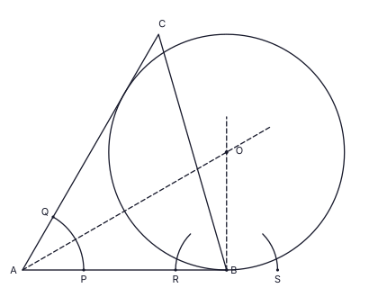
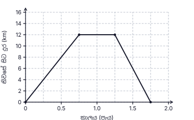
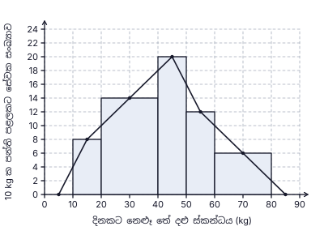
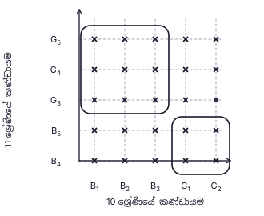
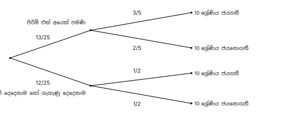

9. a C හි (CA හා CB අතර) ද b B හි (තිරස් කඩ රේඛාව හා BC අතර) ද ලකුණු කිරීම; ඒකාන්තර කෝණ
අවසාන පිළිතුර: a = b

1. 12 × 15 = n × 10 ⇒ n = 18 ; අමතර සේවකයින් = 18 − 12
අවසාන පිළිතුර: සේවකයින් 6 දෙනෙකි
(ලකුණු 2)2. E හරහා AB ට (CD ට) සමාන්තර රේඛාවක් ඇඳීමෙන්: BÂE + EĈD = AÊC ⇒ BÂE = 115° − 45°
අවසාන පිළිතුර: BÂE = 70°
(ලකුණු 2)3. 3×3 + 5×2 − 2×412x = 9 + 10 − 812x
අවසාන පිළිතුර: 1112x
(ලකුණු 2)4. ත්රිකෝණාකාර පාදම් සහිත සෘජු ප්රිස්මයක මුහුණත් ත්රිකෝණ දෙකක් හා සෘජුකෝණාස්ර වේ. සෘජු කෝණයක් නැති සමාන්තරාස්රයක් සෘජුකෝණාස්රයක් නොවේ.
අවසාන පිළිතුර: (iii) ✓
(ලකුණු 2)5. සිසුන් 8 ↔ 20° ⇒ 1° ↔ සිසුන් 0.4 ; මළල ක්රීඩා: 180° ⇒ 180 × 0.4 (හෝ 8 × 9)
අවසාන පිළිතුර: සිසුන් 72 කි
(ලකුණු 2)6. AD̂B = ½ AÔB ; AÊB + AD̂B = 180° (වෘත්ත චතුරස්රය) ⇒ AD̂B = 40° ; CD මගින් AD̂B සමච්ඡේදනය වේ (AC = CB)
අවසාන පිළිතුර: CD̂B = 20°
(ලකුණු 2)7. 3(x2 − 25) = 3(x − 5)(x + 5)
අවසාන පිළිතුර: 3(x − 5)(x + 5)
(ලකුණු 2)8. lg 6000 = lg 6 + lg 1000 = 0.7782 + 3
අවසාන පිළිතුර: 3.7782
(ලකුණු 2)9. a C හි (CA හා CB අතර) ද b B හි (තිරස් කඩ රේඛාව හා BC අතර) ද ලකුණු කිරීම; ඒකාන්තර කෝණ
අවසාන පිළිතුර: a = b
10. වක්ර පෘෂ්ඨය = 2πr(3r) = 6πr2 ; පාදය = πr2 ; අනුපාතය = 6πr2 : πr2
අවසාන පිළිතුර: 6 : 1
(ලකුණු 2)11. සියලු ප්රතිඵල = 4 × 4 = 16 ; එකතුව 10: (3, 7), (5, 5), (7, 3) = ප්රතිඵල 3
අවසාන පිළිතුර: 316
(ලකුණු 2)12. බාහිර කෝණය: DB̂C = 40° + 40° = 80° (AB = BD) ; DB = DC ⇒ DĈB = 80° ; x = 180° − 80° − 80°
අවසාන පිළිතුර: x = 20°
(ලකුණු 2)13. A ∩ B = {6} (A = {3, 6, 9}, B = {2, 4, 6, 8, 10}); A ∪ B = {2, 3, 4, 6, 8, 9, 10}, n = 7
අවසාන පිළිතුර: (ii) ✓
(ලකුණු 2)14. 24x6y48xy2
අවසාන පිළිතුර: 3x5y2
(ලකුණු 2)15. පොදු අනුපාතය r = (−12) ÷ (−4) = 3 ; T4 = −36, T5 = −108 (හෝ T5 = T3·r2 = −12 × 9)
අවසාන පිළිතුර: −108
(ලකුණු 2)16. BD̂C = BÂC = 28° (එකම ඛණ්ඩයේ කෝණ) ; AD̂C = 2 × 28° = 56° ; CB̂E = AD̂C (වෘත්ත චතුරස්රයක බාහිර කෝණය)
අවසාන පිළිතුර: CB̂E = 56°
(ලකුණු 2)17. සංගුණක: මහා.පො.සා.(8, 12, 20) = 4 ; a: අඩුම බලය a1 ; b: අඩුම බලය b1 ; c පොදු නොවේ
අවසාන පිළිතුර: 4ab
(ලකුණු 2)18. ප්රිස්ම පරිමාව = 38.5 × h = πr2h ⇒ (22/7) r2 = 38.5 ⇒ r2 = 38.5 × 7/22 = 12.25
අවසාන පිළිතුර: r = 3.5 cm
(ලකුණු 2)19. DE2 = 102 − 62 = 64 ⇒ DE = 8 cm ; BC = 2DE = 16 cm ; BD = 6 cm ; CE = AE = 10 cm. පරිමිතිය = 16 + 10 + 8 + 6
අවසාන පිළිතුර: 40 cm
(ලකුණු 2)20. අනුක්රමණය = (13 − 4)/(5 − 2) = 3 ; y − 4 = 3(x − 2)
අවසාන පිළිතුර: y = 3x − 2
(ලකුණු 2)21. DÂB = BĈD = 64° (සමාන්තරාස්රයක ප්රතිමුඛ කෝණ) ; AÊB = 90° (අර්ධ වෘත්තයේ කෝණය) ; AB̂E = 180° − 90° − 64°
අවසාන පිළිතුර: AB̂E = 26°
(ලකුණු 2)22. පළමු වසර අවසානයේ මුදල = 21 600 − 3 600 = රු. 18 000 ; 18 000 = P × (120/100) ⇒ P = 18 000 × 100/120
අවසාන පිළිතුර: රු. 15 000
(ලකුණු 2)23. OB̂D = AÔB = 70° (ඒකාන්තර කෝණ, OA ∥ BD) ; OB = OD ⇒ OD̂B = 70°, BÔD = 180° − 140° = 40° ; BÊD = ½ BÔD
අවසාන පිළිතුර: BÊD = 20°
(ලකුණු 2)24. 5x > 3 − 28 = −25 ⇒ x > −5
අවසාන පිළිතුර: −4, −3, −2, −1
(ලකුණු 2)25. BÂC සමච්ඡේදනය කරන්න (P හා Q සිට චාප කැපෙන ලෙස; A සිට සමච්ඡේදකය අඳින්න). B හිදී AB ට ලම්බකය අඳින්න (R හා S සිට චාප කැපෙන ලෙස; B හරහා රේඛාව අඳින්න). ඒවා හමුවන ලක්ෂ්යය O වේ.
අවසාන පිළිතුර: O යනු ඡේදන ලක්ෂ්යය ; OB ≈ 3.5 cm (3.3 – 3.7 පිළිගන්න)

| (i) | |
| ආහාර වියදමින් පසු ඉතිරිය = 1 − 15 = 45 | 1 |
| (ii) | |
| වෙනත් වියදම් = 45 හි 38 = ලැබෙන මුදලින් 310 (ක්රමය) | 1 |
| ඉතිරිය = 45 − 310 = 12 (හෝ 45 × 58 = 12) | 1 |
| (iii) | |
| ලැබෙන මුදල = 95 000 × 2 = රු. 190 000 ; ආහාර = 15 × 190 000 = රු. 38 000 | 1 |
| ආහාරයෙන් පසු ඉතිරිය = 190 000 − 38 000 = 152 000 ; වෙනත් වියදම් = 38 × 152 000 = රු. 57 000 | 1 |
| (iv) | |
| වැටුපෙන් රු. 100 000 ට වැඩි කොටස රු. y යැයි ගනිමු. බද්ද = y හි 10%. වැටුප − බද්ද = ලැබෙන මුදල : 100 000 + y − 0.1y = 190 000 | 1 |
| 0.9y = 90 000 ⇒ y = 100 000 | 1 |
| වැටුප = 100 000 + 100 000 = රු. 200 000 (ගෙවූ බද්ද රු. 10 000 — පරීක්ෂාව: 200 000 − 10 000 = 190 000) | 1 |
| (v) | |
| 38 000200 000 × 100 | 1 |
| 19% | 1 |
මුළු ලකුණු: 10
| (a)(i) | |
| (0.75, 12) සිට (1.25, 12) දක්වා තිරස් රේඛාව (විනාඩි 30 ක් රැඳී සිටීම) | 1 |
| ආපසු ගමනේ රේඛාව නිවැරදි කාලයෙන් 1.25 + 0.5 = 1.75 h හිදී, දුර 0 හිදී අවසන් වීම (ලක්ෂ්යය (1.75, 0)) | 1 |
| (0.75, 12) → (1.25, 12) → (1.75, 0) ලෙස සරල රේඛා ඛණ්ඩ නිවැරදිව සම්බන්ධ කිරීම | 1 |
| (a)(ii) | |
| වේගය = දුර ÷ කාලය = 12 ÷ 0.5 (හෝ 1230/60) | 1 |
| පැයට 24 km | 1 |
| (b)(i) | |
| අර්ධ වෘත්ත චාපයේ දිග = π × 3.5 = 227 × 3.5 (හෝ ½ × 2πr) | 1 |
| = 11 cm | 1 |
| පරිමිතිය = 11 + 22 + 7 + 22 = 62 cm (AB පාදය මායිමේ කොටසක් නොවේ) | 1 |
| (b)(ii) | |
| සෘජුකෝණාස්රයේ වර්ගඵලය = 7 × 22 = 154 cm² ; අර්ධ වෘත්තයේ වර්ගඵලය = ½ × 227 × 3.5 × 3.5 = 19.25 cm² | 1 |
| 154 ÷ 19.25 = 8 ගුණයක් | 1 |

නිවැරදි ප්රස්තාරය (ඉහත): (0, 0) → (0.75, 12) → (1.25, 12) → (1.75, 0). කුඩා කොටුවක අඩක් තුළ ලක්ෂ්ය පිළිගන්න.
මුළු ලකුණු: 10
| (i) | |
| වරිපනම් බද්ද = 20100 × 88 000 (තක්සේරු වාර්ෂික වටිනාකම මත) | 1 |
| = රු. 17 600 | 1 |
| (ii) | |
| වාර්ෂික කුලිය = 9 500 × 12 = රු. 114 000 ; නඩත්තුව = 10% × 114 000 = රු. 11 400 | 1 |
| ඉතිරිය = 114 000 − 17 600 − 11 400 = රු. 85 000 | 1 |
| (iii)(a) | |
| කොටස් ගණන = 7 0003.50 | 1 |
| = කොටස් 2 000 ක් | 1 |
| ආයෝජනය කළ මුදල = 2 000 × 50 = රු. 100 000 | 1 |
| (iii)(b) | |
| එකතු කළ අමතර මුදල = 100 000 − 85 000 = රු. 15 000 | 1 |
| 15 000100 000 × 100 | 1 |
| 15% | 1 |
මුළු ලකුණු: 10
| (i) | |
| සේවක සංඛ්යාව = උස × (පන්ති පළල ÷ 10): 20 – 40: 14 × 2 = 28 | 1 |
| 40 – 50: 20 සහ 50 – 60: 12 (පළල 10 නිසා උස = සංඛ්යාව) | 1 |
| 60 – 80: 6 × 2 = 12 (එකතුව 8 + 28 + 20 + 12 + 12 = 80 ✓) | 1 |
| (ii) | |
| තිරස් අක්ෂයේ නිවැරදි පන්ති මායිම් 10, 20, 40, 50, 60, 80 සහිතව, හිඩැස් නොමැතිව ඒකාබද්ධව ඇඳි සෘජුකෝණාස්ර පහ | 1 |
| උස 8, 14, 20, 12, 6 — පහම නිවැරදි නම් (තුනක් හෝ හතරක් නිවැරදි නම්: ලකුණු 1) | 2 |
| (iii) | |
| සමුච්චිත සංඛ්යාත: 8, 36, 56 (පළමු තුන නිවැරදි) | 1 |
| 68, 80 (අවසාන දෙක නිවැරදි) | 1 |
| (iv) | |
| 50 kg හෝ ඊට වැඩි ස්කන්ධයක් නෙළූ සේවකයින් = 12 + 12 = 24 | 1 |
| සම්භාවිතාව = 2480 = 310 | 1 |
සම්පූර්ණ කළ වගුව (පන්තිය | සංඛ්යාව | සමුච්චිත): 10 – 20 | 8 | 8; 20 – 40 | 28 | 36; 40 – 50 | 20 | 56; 50 – 60 | 12 | 68; 60 – 80 | 12 | 80.

මුළු ලකුණු: 10
| (i) | |
| ඡේදන ලක්ෂ්ය 25 ම “×” ලකුණෙන් දැක්වීම (23 – 24 ක් නිවැරදි නම්: ලකුණු 1) | 2 |
| (ii) | |
| හරියටම ප්රතිඵල 13 ක් වට කරන සංවෘත වක්ර: B1, B2, B3 × G3, G4, G5 කොටස (ප්රතිඵල 9) සහ G1, G2 × B4, B5 කොටස (ප්රතිඵල 4) | 1 |
| ප්රයෝජනවත් ප්රතිඵල 9 + 4 = 13 ; සියලු ප්රතිඵල 25 | 1 |
| P(හරියටම පිරිමි එක් අයෙක්) = 1325 | 1 |
| (iii) | |
| පළමු අතු: 1325 (හරියටම පිරිමි එක් අයෙක්) සහ 1225 (දෙදෙනාම පිරිමි හෝ දෙදෙනාම ගැහැණු) | 1 |
| “හරියටම පිරිමි එක් අයෙක්” පසු: ජයගනී 35, ජයනොගනී 25 | 1 |
| “දෙදෙනාම පිරිමි හෝ දෙදෙනාම ගැහැණු” පසු: ජයගනී 12, ජයනොගනී 12 | 1 |
| (iv) | |
| P(ජයනොගනී) = 1325 × 25 + 1225 × 12 = 26125 + 625 | 1 |
| = 56125 | 1 |


මුළු ලකුණු: 10